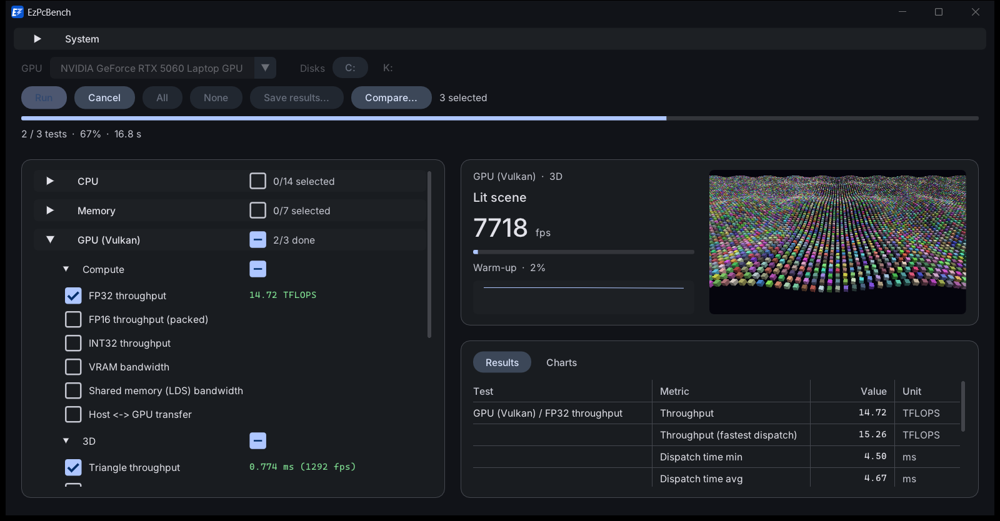
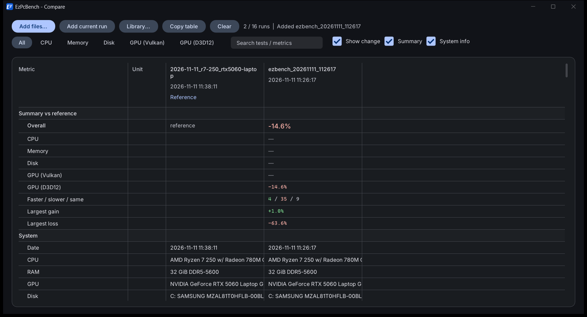

Benchmark your PC.
Get real numbers.
A small native Windows benchmark for CPU, memory, GPU (Vulkan and Direct3D 12) and disks. It reports raw throughput — GFLOPS, GB/s, ns, IOPS, frame times — never made-up scores.

What it measures
55 tests across four suites, each reporting its numbers in explicit units. CPU and memory tests run single-threaded and on every thread; kernels are hand-written and their output self-checked.
CPU
- Integer and FP32 / FP64 FMA throughput (scalar, AVX2, AVX-512)
- SGEMM, SHA-256, AES-128 (VAES)
- Sort and prime sieve workloads
- Core-to-core latency matrix, thread scaling
Memory
- DRAM read, write, copy, triad bandwidth
- Normal and non-temporal stores
- Latency from 4 KiB to 1 GiB
- Cache bandwidth sweeps, L1 to DRAM
GPU · Vulkan + D3D12
- Compute: FP32, FP16, INT32, VRAM, shared memory, PCIe
- 3D: triangles, fill rate, draw calls, a lit scene
- 2D: sprites, blit, clear
- Same shaders on both APIs, so they compare directly
Disk
- CrystalDiskMark-style SEQ1M and RND4K
- Several queue depths, read and write
- MB/s, IOPS and latency
- One or more drives per run
Compare runs side by side
Load any number of saved runs, the run you just did, or reference runs built into the app.
- Summary first: overall and per-suite change against a reference run, plus the biggest gain and loss.
- Every number: raw values with the % change, green when better, red when worse.
- System info for each run, with differences from the reference highlighted.
- Library of reference runs on other PCs, compressed into the exe.
- Copy table straight into a spreadsheet.

Built to stay out of the way
Small, native and quick, so the benchmark measures your hardware instead of itself.
Live progress
Watch each test's current rate, a sparkline and a live preview of the GPU render while it runs.
Native and light
C++ with Dear ImGui. The UI redraws at a throttled rate during runs and the exe has no runtime to install.
Readable results
Runs save as compact TOON text files you can open in any editor and diff.
Command line too
The same tests headless, with saved output and comparison against an earlier run, for scripts and repeat checks.
Download
Grab the exe from the latest release and run it. It asks for admin rights at start; they are optional and only enable a few extra tweaks.
Requirements
- Windows 10 or 11, x64
- A CPU with AVX2
- A GPU driver with Vulkan support (D3D12 and Vulkan 1.3 for the GPU tests)
- For stable numbers: AC power and the Best performance power mode
Command line
ez-pc-bench-cli --list # test ids
ez-pc-bench-cli --run cpu,mem --out run.toon.txt # run suites / ids
ez-pc-bench-cli --compare run.toon.txt # run and diffBuild from source
- LLVM (clang-cl + lld), CMake 3.29+ and Ninja
- MSVC build tools with a Windows SDK
- Vulkan SDK
git clone https://github.com/0xrsp/ez-pc-bench
cd ez-pc-bench
cmake --preset release
cmake --build --preset release -- -j 6No developer prompt needed. See the README for details.